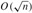
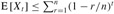
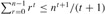
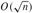

|
|
< Day Day Up > |
|
The methods for representing lists given in the previous section extend to any homogeneous data structure. In this section, we look specifically at the problem of representing rooted trees by linked data structures. We first look at binary trees, and then we present a method for rooted trees in which nodes can have an arbitrary number of children.
We represent each node of a tree by an object. As with linked lists, we assume that each node contains a key field. The remaining fields of interest are pointers to other nodes, and they vary according to the type of tree.
As shown in Figure 10.9, we use the fields p, left, and right to store pointers to the parent, left child, and right child of each node in a binary tree T . If p[x] = NIL, then x is the root. If node x has no left child, then left[x] = NIL, and similarly for the right child. The root of the entire tree T is pointed to by the attribute root[T]. If root[T] = NIL, then the tree is empty.
The scheme for representing a binary tree can be extended to any class of trees in which the number of children of each node is at most some constant k: we replace the left and right fields by child1, child2,..., childk. This scheme no longer works when the number of children of a node is unbounded, since we do not know how many fields (arrays in the multiple-array representation) to allocate in advance. Moreover, even if the number of children k is bounded by a large constant but most nodes have a small number of children, we may waste a lot of memory.
Fortunately, there is a clever scheme for using binary trees to represent trees with arbitrary numbers of children. It has the advantage of using only O(n) space for any n-node rooted tree. The left-child, right-sibling representation is shown in Figure 10.10. As before, each node contains a parent pointer p, and root[T] points to the root of tree T . Instead of having a pointer to each of its children, however, each node x has only two pointers:
left-child[x] points to the leftmost child of node x, and
right-sibling[x] points to the sibling of x immediately to the right.
If node x has no children, then left-child[x] = NIL, and if node x is the rightmost child of its parent, then right-sibling[x] = NIL.
We sometimes represent rooted trees in other ways. In Chapter 6, for example, we represented a heap, which is based on a complete binary tree, by a single array plus an index. The trees that appear in Chapter 21 are traversed only toward the root, so only the parent pointers are present; there are no pointers to children. Many other schemes are possible. Which scheme is best depends on the application.
Draw the binary tree rooted at index 6 that is represented by the following fields.
|
index |
key |
left |
right |
|---|---|---|---|
|
|
|||
|
1 |
12 |
7 |
3 |
|
2 |
15 |
8 |
NIL |
|
3 |
4 |
10 |
NIL |
|
4 |
10 |
5 |
9 |
|
5 |
2 |
NIL |
NIL |
|
6 |
18 |
1 |
4 |
|
7 |
7 |
NIL |
NIL |
|
8 |
14 |
6 |
2 |
|
9 |
21 |
NIL |
NIL |
|
10 |
5 |
NIL |
NIL |
Write an O(n)-time recursive procedure that, given an n-node binary tree, prints out the key of each node in the tree.
Write an O(n)-time nonrecursive procedure that, given an n-node binary tree, prints out the key of each node in the tree. Use a stack as an auxiliary data structure.
Write an O(n)-time procedure that prints all the keys of an arbitrary rooted tree with n nodes, where the tree is stored using the left-child, right-sibling representation.
Write an O(n)-time nonrecursive procedure that, given an n-node binary tree, prints out the key of each node. Use no more than constant extra space outside of the tree itself and do not modify the tree, even temporarily, during the procedure.
The left-child, right-sibling representation of an arbitrary rooted tree uses three pointers in each node: left-child, right-sibling, and parent. From any node, its parent can be reached and identified in constant time and all its children can be reached and identified in time linear in the number of children. Show how to use only two pointers and one boolean value in each node so that the parent of a node or all of its children can be reached and identified in time linear in the number of children.
For each of the four types of lists in the following table, what is the asymptotic worst-case running time for each dynamic-set operation listed?
|
unsorted, singly linked |
sorted, singly linked |
unsorted, doubly linked |
sorted, doubly linked |
|
|---|---|---|---|---|
|
SEARCH(L, k) | ||||
|
INSERT(L, x) | ||||
|
DELETE(L, x) | ||||
|
SUCCESSOR(L, x) | ||||
|
PREDECESSOR(L, x) | ||||
|
MINIMUM(L) | ||||
|
MAXIMUM(L) |
A mergeable heap supports the following operations: MAKE-HEAP (which creates an empty mergeable heap), INSERT, MINIMUM, EXTRACT-MIN, and UNION.[1] Show how to implement mergeable heaps using linked lists in each of the following cases. Try to make each operation as efficient as possible. Analyze the running time of each operation in terms of the size of the dynamic set(s) being operated on.
Lists are sorted.
Lists are unsorted.
Lists are unsorted, and dynamic sets to be merged are disjoint.
Exercise 10.3-4 asked how we might maintain an n-element list compactly in the first n positions of an array. We shall assume that all keys are distinct and that the compact list is also sorted, that is, key[i] < key[next[i]] for all i = 1, 2,..., n such that next[i] ≠ NIL. Under these assumptions, you will show that the following randomized algorithm can be used to search the list in  expected time.
COMPACT-LIST-SEARCH(L, n, k) 1 i ← head[L] 2 while i ≠ NIL and key[i] < k 3 do j ← RANDOM(1, n) 4 if key[i] < key[ j] and key[j] ≤ k 5 then i ← j 6 if key[i] = k 7 then return i 8 i ← next[i] 9 if i = NIL or key[i] > k 10 then return NIL 11 else return i
If we ignore lines 3-7 of the procedure, we have an ordinary algorithm for searching a sorted linked list, in which index i points to each position of the list in turn. The search terminates once the index i "falls off" the end of the list or once key[i]≥ k. In the latter case, if key[i] = k, clearly we have found a key with the value k. If, however, key[i] > k, then we will never find a key with the value k, and so terminating the search was the right thing to do.
Lines 3-7 attempt to skip ahead to a randomly chosen position j. Such a skip is beneficial if key[j] is larger than key[i] and no larger than k; in such a case, j marks a position in the list that i would have to reach during an ordinary list search. Because the list is compact, we know that any choice of j between 1 and n indexes some object in the list rather than a slot on the free list.
Instead of analyzing the performance of COMPACT-LIST-SEARCH directly, we shall analyze a related algorithm, COMPACT-LIST-SEARC′, which executes two separate loops. This algorithm takes an additional parameter t which determines an upper bound on the number of iterations of the first loop.
COMPACT-LIST-SEARC′ (L, n, k, t) 1 i ← head[L] 2 for q ← 1 to t 3 do j ← RANDOM(1, n) 4 if key[i] < key[j] and key[j] ≤ k 5 then i ← j 6 if key[i] = k 7 then return i 8 while i ≠ NIL and key[i] < k 9 do i ← next[i] 10 if i = NIL or key[i] > k 11 then return NIL 12 else return i
To compare the execution of the algorithms COMPACT-LIST-SEARCH(L, k) and COMPACT-LIST-SEARC′(L, k, t), assume that the sequence of integers returned by the calls of RANDOM(1, n) is the same for both algorithms.
Suppose that COMPACT-LIST-SEARCH(L, k) takes t iterations of the while loop of lines 2-8. Argue that COMPACT-LIST-SEARC′(L, k, t) returns the same answer and that the total number of iterations of both the for and while loops within COMPACT-LIST-SEARC′ is at least t.
In the call COMPACT-LIST-SEARC′(L, k, t), let Xt be the random variable that describes the distance in the linked list (that is, through the chain of next pointers) from position i to the desired key k after t iterations of the for loop of lines 2-7 have occurred.
Argue that the expected running time of COMPACT-LIST-SEARC′(L, k, t) is O(t + E [Xt]).
Show that . (Hint: Use equation (C.24).)
Show that .
Prove that E [Xt] ≤ n/(t + 1).
Show that COMPACT-LIST-SEARC′(L, k, t) runs in O(t+n/t) expected time.
Conclude that COMPACT-LIST-SEARCH runs in  expected time.
Why do we assume that all keys are distinct in COMPACT-LIST-SEARCH? Argue that random skips do not necessarily help asymptotically when the list contains repeated key values.
[1]Because we have defined a mergeable heap to support MINIMUM and EXTRACT-MIN, we can also refer to it as a mergeable min-heap. Alternatively, if it supported MAXIMUM and EXTRACT-MAX, it would be a mergeable max-heap.
|
|
< Day Day Up > |
|